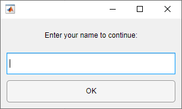

Improve App Performance
To create apps that respond quickly and smoothly to user input, you can use several performance improvement techniques in your code. These techniques include loading and updating only the parts of your app that are visible and taking advantage of certain app building capabilities that are optimized for responsiveness. To improve the performance of an app, start by identifying bottlenecks in your code by profiling your app. Then, use any of the techniques that are relevant to the app you are building.
| Issue | Possible Cause | Possible Solution | More Information |
|---|---|---|---|
| App is slow to start up. | App contains a tab group with many components in the default selected tab. | Limit the number of components in the selected tab at app startup. | Improve Startup Time |
| App contains a tree with a large number of tree nodes. | Create child nodes only after an app user expands a parent node in the tree. | ||
| Interacting with a UI component feels unresponsive. | App contains a component with a ValueChangingFcn
callback. | Replace the ValueChangingFcn callback with a
ValueChangedFcn callback. | Use ValueChangedFcn Callbacks Instead of ValueChangingFcn Callbacks |
| Interacting with or displaying data in a table feels unresponsive. | App makes many updates to the data of a large table UI component. | Aggregate data in your app code before setting the table Data
property. | Minimize Table Data Updates |
| Resizing the app is slow or jittery. | App uses a SizeChangedFcn callback or sets the
Position property for many components. | Use a grid layout manager to lay out your app. | Improve Resize Behavior |
| App is slow to respond after user input. | App uses a while loop to wait for a user to complete an
action. | Use the waitfor function instead. | Wait for User Input Using waitfor |
| App performs long-running computations in a callback function. | Use backgroundPool to perform computations in the background
without blocking user input. | Run App Calculations in the Background | |
| Graphics in the app are slow to load or update. | Multiple possible causes | Multiple possible solutions | Improve Graphics Performance |
Identify Bottlenecks in Your Code
Use the Profiler app to identify the functions that contribute the most time to the execution of your code. You can then evaluate those functions for possible performance improvements.
To profile an app, follow these steps:
Open the Profiler by going to the Apps tab, and under MATLAB, clicking the Profiler app icon. You also can type
profile viewerin the Command Window.In the Profile section of the Profiler toolstrip, click
 Start Profiling. Make sure that there is no code in the text
box next to the button.
Start Profiling. Make sure that there is no code in the text
box next to the button.Start the app.
Use the app.
When you are finished, click
 Stop Profiling in the Profiler toolstrip.
Stop Profiling in the Profiler toolstrip.
To learn more about using the Profiler, see Profile Your Code to Improve Performance.
Improve Startup Time
When you start up an app, your code performs many tasks to load the app content. These tasks can include creating UI components, setting component properties, processing data, and performing setup calculations. As apps grow larger, these tasks can take more time, which results in longer app startup times. You can improve the startup time of your app by initializing and performing calculations for only the parts of your app that are visible at startup. You can then use callbacks to initialize and update other portions of the app after the app is loaded, and only when the app user needs to see them.
Some types of apps where this technique can have significant benefits include:
Apps with multiple tabs — Initialize and update only the content in the tab that is visible.
Apps containing trees with many nodes — Create child nodes only after an app user expands a parent node in the tree.
For more information, and for examples of how to update your app code in these cases, see Improve App Startup Time.
Improve Update Time
Apps often contain callbacks that update the app in response to user input. To improve responsiveness while your app is running, minimize the number of updates made in the app code. When your app performs updates and calculations only when they are needed, interactions and animations in the app can feel much smoother.
Use ValueChangedFcn Callbacks Instead of ValueChangingFcn Callbacks
Many components, such as sliders and text areas, have both a
ValueChangedFcn callback and a
ValueChangingFcn callback. Both of these callbacks execute in
response to a change in the component value, but they execute at different times in the
interaction.
The
ValueChangedFcncallback executes once after the app user finishes the interaction. For example, theValueChangedFcncallback of a slider executes after the user releases the slider thumb at its final value.The
ValueChangingFcncallback executes multiple times at regular intervals while the app user performs the interaction. For example, theValueChangingFcncallback of a slider executes regularly as the user drags the slider thumb.
Using a ValueChangedFcn callback minimizes the number of times
the callback function is executed, which can make the interaction with the component feel
more responsive. Consider using a ValueChangedFcn over a
ValueChangingFcn callback in these scenarios:
There is no need to update the app until the user reaches a final value.
Your callback function performs updates or calculations that take a long time to run.
Minimize Table Data Updates
Apps often use table UI components to store and display large amounts of data. As a
result, updating that data can be an expensive operation. Improve the performance of your
app when updating table data by minimizing the number of times you update the
Data property of the Table object.
For example, to update two columns in a table UI component, use this code to modify
the table Data property in a single operation instead of using a
separate operation for each column:
fig = uifigure; data = readtable('tsunamis.xlsx'); tbl = uitable(fig,"Data",data); newcols = tbl.Data{:,1:2} + 1; tbl.Data{:,1:2} = newcols;
Improve Resize Behavior
When a user resizes an app, it is common for all of the UI components in the app to
resize in response to the new app window size. To improve resize performance in your app,
consider using a grid layout manager instead of setting the Position
property or writing a SizeChangedFcn callback. You can add a grid
layout manager to your app by using the uigridlayout
function or, in an existing app in App Designer, by right-clicking the canvas and selecting
Apply Grid Layout.
Some benefits of using a grid layout manager are:
The app manages the resize behavior without additional resize code.
The resize operation is applied smoothly, with all components being resized at the same time.
For more information about using a grid layout manager, see Manage App Resize Behavior Programmatically.
Improve Responsiveness to User Input
To improve the time it takes for your app to respond after a user interacts with the app interface, ensure that MATLAB® executes your code that responds to the interaction as soon as possible.
Wait for User Input Using waitfor
To pause app execution while waiting for user input, use the waitfor function. This technique allows your app to respond to an
interaction immediately and also makes the app code more readable.
For example, this code creates a dialog box that prompts a user to enter their name.
Call the waitfor function to block code execution until the
UserData property of the button is set to
"Clicked". Then update the UserData property in
the ButtonPushedFcn callback. When the user enters their name and
clicks the OK button, the code execution resumes.
fig = uifigure("Position",[500 500 300 150]); gl = uigridlayout(fig,[3 1]); lbl = uilabel(gl,"Text","Enter your name to continue:", ... "HorizontalAlignment","center"); ef = uieditfield(gl); btn = uibutton(gl,"Text","OK","ButtonPushedFcn",@updateButton); waitfor(btn,"UserData","Clicked"); disp("Program execution resumed") function updateButton(src,event) src.UserData = "Clicked"; end

Run App Calculations in the Background
When you run calculations in your app, the user interface can become unresponsive while MATLAB is busy. For example, MATLAB will not process callbacks in response to user interaction while a calculation is in progress. To enable your app to immediately respond to interactions even while running calculations, use the background pool to run the calculations in the background.
For an example of how to create an app that responds to button pushes while running calculations in the background, see Create Responsive Apps by Running Calculations in the Background. For an example of how to update a wait bar while app calculations are running, see Update Wait Bar While Functions Run in the Background.
Improve Performance of Graphics in Your App
If your app includes graphics, there are additional techniques that you can use to optimize performance and responsiveness:
Update only changed data.
Identify bottlenecks in your code.
Limit updates to long-running animations.
Use built-in axes interactions, and disable the interactions that the app does not require.
To learn more, see Improve Graphics Performance.